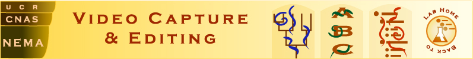

Live specimen of
Bipalium
Live specimen prepared by Melissa Yoder, Paul De Ley, and the Entomology Department
Click here for the scale bars
Click on the appropriate triangle in the image below to open the relevant clip.
Copyright 2002